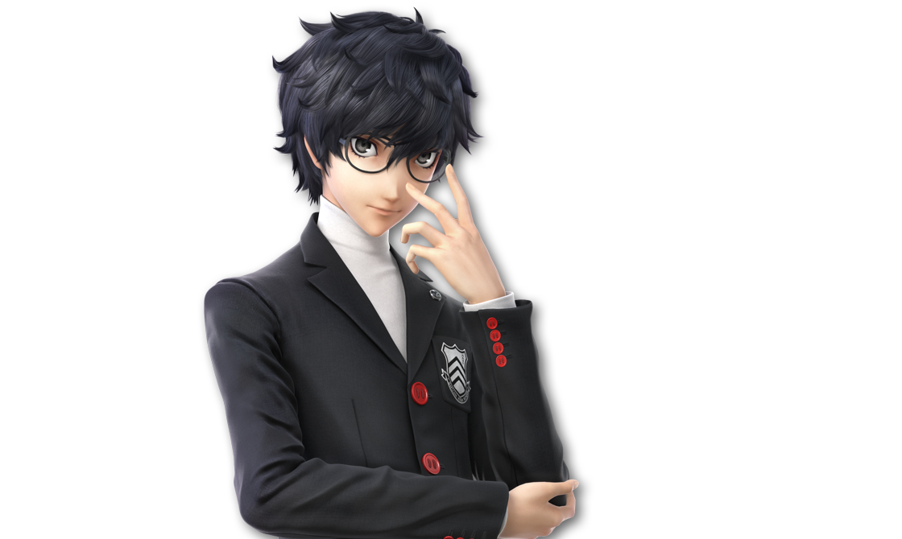

“This isn’t happening, this isn’t happening, this isn’t happening, this isn’t happening, this isn’t happening...”

Daigo hides in one of the many locker rooms of the ASS Stadium, thankfully one that’s empty... Though, it still doesn’t
change the fact that there’s still so much weird stuff going on with the layout of this place. Lockers are in places where they aren't supposed to be in,
the shades of color are different enough to be noticeable but not enough to notice at first glance... Everything’s just ever so
slightly off in a way that feels uncomfortable.
It’s just not the same. There’'s no other way to put it.
But that’s not the problem right now, is it?
He sits on a bench, hunched over and hands over his head. His breathing’s so quick and panicked. He’s clawing at his head, trying really
hard not to tear his hair out, or even his own ears.
This whole thing has been a fucking nightmare.
This should’ve been the best tournament ever. The dream tournament where he can fanboy out and talk with the CPUK roster,
where his own fighters from ASS can meet them and understand why CPUK’s so important to Daigo.
But it’s not.
Because she’s here.
She’s going to ruin this somehow. She’s probably going to kill someone if they rub her the wrong way. Hell, she might even kill them
if they look at her wrong.
What if it’s one of CPUK’s fighters again? What if it’s one of ASS’s this time around?
...What if it’s Tera?
Just the thought almost sends him into even more of a panic.
Thankfully, that train of thought is cut off as he hears a voice.
“There you are.”
And he turns to see Tera approaching him with a gentle look in its eyes.
“I’ve been looking everywhere for you. I was worried after what happened out in the field.”

Daigo should be feeling relieved right now...
But he just doesn’t.
He steels himself, stands up, and faces it.
“Tera. What the fuck is she doing here?”
Tera furrows its brows.
“I’m...not entirely sure what you mean.”
“What. The fuck. Is Prism doing here?! WHY is she here?!”
“Well, she is our guest host. She’s the one who came up to me with the idea of this tourney and—”
“And you just fucking went with it?! I told you about how she’s bad fucking news before, dude! I went on for ages about it!”
Tera sighs.
“Now, Daigo, I understand that. But she is the host of CPU Kerfuf—”
“No! No, she’s not! Iggy is! Iggy Koopa!! He’s the god you should’ve talked to and brought over!! Prism even said so herself, she literally took over when the Grand Kerfuffle started!”
“Daigo, I understand that you’re scared, but really, she doesn’t seem to be as fearsome as you say...”
“You really trust that fake-ass smile of hers?! Seriously?! Like, who fuckin’ knows what she’s thinking, man?! She’s probably plotting another fucking takeover or something! And for some reason, she chose us! And for what?!”
Daigo’s nails are so close to his mouth, he might just start biting them.
“What if she’s after the Drivers...?! What if she’s just like fuckin’ CybeleCorp....?!”
“Daigo.”
Tera places a hand on Daigo’s shoulder, snapping him out of his trance once again.
“You need to calm down. Isn’t this tournament what you wanted for so long? Don’t you want to have fun like everyone else? Can’t you just...put her aside and not worry about her?”
“I...”
Tera does have a point. And Daigo was just thinking about it not too long ago. This is quite literally the tournament
of his dreams. There’s no way that he could get another chance like this in his life. Maybe if he and Tera are lucky enough, sure, but...
...
“I can’t. I’m sorry.”
It just doesn’t seem worth it.
“And I really appreciate it, man. I just...”
Not with Prism around.
He pulls himself away from his fellow host and friend, limply and weakly, as his breath still shudders with his head swimming in all
these thoughts of her.
“I’m scared of her. I’m scared of what she’ll do. To anyone. To you.”
“Daigo...”
He starts to move past Tera and to the door, head lowered, ears floppy, and mood eternally ruined.
And he pushes it open.
Before he does, he turns his head to face Tera, yet he doesn’t want to look at him. He wants to avoid its gaze.
“Look, I’ll just...watch the tourney from HQ. I don’t wanna be anywhere near her... Just promise me you’ll keep everyone safe and keep an eye out for any weird shit going on, alright...?”
And he turns back...
“Hey there, Daigo.”

“AAAAAAAAAAAAAAAAAAAAAAAAAHH!!!”
He lets out a shriek of pure and genuine terror.
Prism stands there right in front of him, waving.
And still smiling that awful smile of hers. Just popped into existence like his own personal devil, come to torment him.
He tries to run away, only to trip and fall on his ass. But that still doesn’t stop him from trying to crawl away.
“S-S-Stay back...!”
“Daigo, listen, I—”
He reaches for his sword, the “ChargeCalibur,” as he affectionately calls it, and draws it on her.
“I said stay away from me!!”
But his hold on it is shaky at best. His grip is tight, but from the sound of it, the blade keeps rattling in his hand. Almost like even the ChargeCalibur itself is afraid of her.
There’s a sadness to her eyes as she looks down at the sword, however.
She steps forward, ever so slightly, inch by inch...
“Daigo... I’m not here to hurt you or anyone else.”
Her voice is so...soft and gentle. It’s so weird to hear it.
Even more unsettling for someone like Daigo.
“I-I don’t believe you...! W-What did you do to Tera?! Why is he going along with your plans?!”
“I didn’t do anything at all. He can vouch for me, right, Tera?”
It nods.
“We were simply talking with each other, mostly about planning this sort of thing together.”
Daigo doesn’t seem all that convinced. If anything, he’s shaking even more.
“I know you’re scared, but I’ve turned over a new leaf.”
“W-W-Wha...?”
“I’ve been through a lot, and I’ve done a lot of thinking since then...”
“W-What’re you talking about...?
He manages to stand up, keep the ChargeCalibur raised at Prism.
“What the hell do you mean you’'ve been through a lot...?!”
“Oh, right... You...probably don’t know about the Non-Canon Curiosity Tournaments...”
“‘Non-Canon Curi—...?’ What the fuck are you talking about?!”
She steps even closer now, moving past the blade.
“Here. Let me help.”
She reaches out a hand, two fingers outstretched and getting closer and closer to Daigo.
“H-Hey!! I told you to get away from—!”
He pulls an arm back, ready to swing his sword at her hand. But before he could even get the chance to...
Tap.
Her fingertips poke Daigo’s forehead.
And in that very same instant, flashes of information start flooding his brain.
A lot of information.
Dreams, 64-person brackets, a hedgehog named Nelson, mashed potatoes, something about a script, the Lord of Snakes, car batteries,
Spectrum, Dantoinette kissing Crimson, self-actualization, the end of everything, stories, souls, Discord—
With a long gasp, he pulls himself back and away from Prism, and falls to his knees, coughing up a storm as he clutches at his head, drowning in the flood of information. He heaves violently, feeling like he’s about to start throwing up and starting the coughing fit all over again.
“Daigo!”
Tera rushes over to Daigo’s side to help his fellow host up on his feet, help keep his balance, as Daigo starts to speak in-between gasps.
“Wha...? W-What the fuck did you do to me...?”
“I caught you up on everything about the NCCTs, up until the point I had to put it on hold. You should know what I’m talking about, right?”
As he slowly catches his breath, he starts to focus a little more. His head somehow feels more lucid yet still bloated,
like a migraine that doesn’t really ache.
He feels like he can think a little straighter somehow with all these “memories” of tournaments he hadn’t heard of before, details and
information he had never known while CPUK was airing, knowing it all as if he was actually there listening in.
“Y-Yeah... Yeah, I do.”
“And you’re aware that you’re dreaming, right?”
“I am now.”
“Good... That’s good...”
Daigo remembers...so much about everything. The fights, the interactions, the happenings... Everything that's happened
in these newly discovered “Non-Canon Curiosity Tournaments.”
Most of all, he can remember some things about Prism.
...A lot of things, actually.
“Hold a minute, what do you mean by ‘dreaming’?”
“Just give us a sec, Tera... I’'ll explain in a little bit...”
...
Something inside of Daigo starts to boil.
In one instant, he could feel everything. He could feel all the fear of Prism leave his body. He could feel his heart pound faster
and faster. He could feel his teeth grinding against each other. He could feel both of his fists ball up and tighten. He could feel
the fur on his ears and tail bristling.
His whole body quakes, struggling to contain that something, to hold it back.
“Now, I’m sure you have a lot of things to say and a lot of emotions to process… But I want you to know first and foremost that I’m not here for—”
SMAAAAAAASH!!!!
In that same instant, that something inside of him takes control of his body and wastes no time in turning on his heels and punching Prism square in the
face with all the might he can muster, his fist smushing and grinding deep against her nose and lips. He manages to make her trip and stumble back, as
her back slams against the wall behind her.
It was a sloppy hit. His angle was off and he’s pretty sure he twisted his wrist a little with that.
But to him, that doesn’t even matter right now.
She looks up at the co-host of ASS, somehow still smiling as she shakily cups her nose with a hand, wiping away a bit
of what looks like multicolored…sparkles? Blood? Hard to tell.
She grunts the words out through the pain, albeit a little nasally, as she shambles and slides up to her feet.
“Y-Yeah... I guess that’s a reasonable reaction... Not gonna say that I didn’t deserve that, but—”
Daigo lets out a roar from deep within his gut, his eyes wild and rabid, as he attempts to leap at her.
Before he could get the chance to do anything else to her, Tera successfully grapples and holds him back.
“Daigo, what are you doing?!”
“Let me go!!”
The two of them struggle as Daigo flails and grunts himself loose to no avail. In the middle of this flailing, he focuses on her, still quaking with rage, just absolutely seething.
“What in the actual fuck is wrong with you?!”
“Daigo, please listen, I’m not—”
“No! You shut the hell up! I don’t wanna hear any of the bullshit coming out of your mouth! You think you can just walk in here and try this shit?! After everything you've done?!”
“Daigo, enough! What are you saying?!”
“I said let me go! You stay out of this!”
“I said that’s enough!!”
Tera tosses Daigo around and behind it, as far from Prism as it can manage.
More so out of exhaustion than anything else, Daigo calms himself down by only a little.
“Why the hell are you stopping me...?!”
“I’m not going to let you assault our guest host. I know you’re heated, but—”
“But what?! We’re just supposed to give her a chance to do whatever she wants?! To fuck with our roster?! Or even us?!”
Tera sighs.
“Clearly, there’s some context that I am missing from all of this... So I’d appreciate if either of you would enlighten me...”
“Oh, well, why don’t we let the Girl Scout over here speak for herself?!”
“...”
Prism hesitates to look at either of the ASS hosts in the eyes.
Daigo scoffs with a “tch” as he mutters something under his breath.
“Of course you won’t... Can’t even talk about what you did ‘cause you’re nothing more than a fucking cow—...!”
“U-Umm...”
Suddenly, a new voice cuts through the tension, causing all three hosts to turn towards the door.
A human, it seems like, with a little fang over their mouth and little demon horns on their head, peeks through the door leading
outside.
“Is everything alright, s-sirs...?”
Risyra (Joker, Skin 7), They/Them, Scout
“Silent, Maybe Not Deadly”
Status: Really, Really Concerned
Daigo flinches at the scout’s appearance.
“R-Ris...”
“Hm...? I-Is there something wrong, Daigo?”
“...”
“We’re fine, Risyra. No need to worry about us.”
“Mhm... I-I was just making sure since I heard a lot of screaming going on in here...”
“...It’s nothing you gotta worry about. Just...go have fun in the tournament.”
“Y-Yes, sirs!”
Risyra slides out of view from the door and goes off to have fun like their life depended on it.
With that out of the way, Daigo gets back to glaring at Prism. Not as rage-fueled as he was seconds ago, but still pretty miffed
about the whole thing, huffing out a quick sigh before continuing.
“Alright, now talk. What the hell are you even doing here? What do you want from us?”
“I...”
Prism takes a deep breath, merely glancing at the ASS hosts before keeping her gaze down again.
There’s a melancholic energy about her now. Her movement is a bit sluggish, her voice is a bit quiet...
There’s even what looks to be sadness in that smile of hers.
“I’m...doing a little soul-searching.”
Daigo folds his arms, his face looking quite unamused.
“Wooooow, Prism. And here I thought you couldn’t lie, but you just said that you have a soul with no trouble at all.
There’s venom in that sarcastic tone of his.
A heavy sigh.
“I know you’re mad at everything I’ve done and said. Everyone’s mad, and I don’t blame them at all. I’m here because I just... I want to know what I should be doing instead of...everything before then.”
“And what’s that got to do with us?”
“I’ve plucked fighters from other shows for my own tourneys, but... I never really took the time to think about who they are, where they’re from, what they’ve experienced... What stories they had to play a part of in their shows and why they do what they do.”
Finally, she manages to raise her head and properly look at Daigo and Tera in the eyes.
“So, I decided to see all these fuffles up from close and try to find out why they exist or why the people who made them love doing so. Yours included. And I guess...try to make amends with some of them, too, while I’m at it. If I even can... After all, a lot of these shows started because of CPUK. Seems only reasonable that a lot of driving forces behind them also wouldn’t have the highest opinion of me, as you demonstrated.”
“Weird how you’re ‘making amends’ to me and Tera and probably every other fan and not to the actual people you should be doing it to.
“And that’s the whole reason I came here and helped make the Dream Tourney Festival. I managed to catch you while you were asleep, and... Well... You know the rest.”
Tera looks... Well, he just looks and feels confused hearing about all of this.
“This... This is all a dream...?”
She nods.
“If you need an extra reason to believe me, you should know that I physically can’t tell a lie. Daigo should know this too now, right?”
Daigo lets out another quick sigh, a begrudging one.
“Yeah... She can say what she believes, but she can’t just outright lie to our faces.”
Tera just kind of...stands there for a moment, letting the words soak in.
“I... I see...”
“I know I’ve done a lot of wrong, Daigo. But you have to understand, I just didn’t want it all to end. I mean, think about it, CPU Kerfuffle as we all know it would just cease to exist if there’s no more story to tell. The show itself stopped and went on hiatus, and it would just be stuck there for the rest of time, with no closure for anything... And when fear takes hold of you, you tend to go to darker places... So I had to keep things going at any cost. Even if it meant hurting others. Even if it meant I had to be the villain I was assigned to be.”
She wipes her eyes with a hand, making sure those tears don’t get in the way of anything.
“You don’t have to forgive me. I just want you to know my side of the story and why I’m here, even if I always feel this guilt eating away at me...”
...
For a moment, Prism’s whole story gets to Daigo. He kinda gets it. He doesn’t want CPUK to end either. But here we are.
For a moment, Daigo was willing to accept her offer. Let the DTF continue. After all, it did just start. Would be a shame to end it here
and now.
For a moment, all of his anger, all of his fury and hate, had melted away.
“...”
But it was only for a moment, and not a moment longer.
Because the longer her words stewed around in his brain with all those new memories of his, the less he sympathized with her.
He shakes his head to get himself out of that funk.
“Alright. Okay. Lemme see if I got this. You wanted to keep the narrative going, no matter what. Keep the story moving so it doesn’t stop. Because you were scared of everything ending and that would make you spontaneously die. Am I getting that right?”
“Well, the more accurate way to put it is that I would stop existing... But besides that, yeah.”
He sighs deeply.
“Okay, cool.”
All that sympathy is replaced with cold disdain.
“That changes abso-fucking-lutely nothing. But hey, we shouldn’t keep Tera in the dark about all this. It should know why I hate your fucking guts. So let’s start counting up your sins. Y’know, since you kept quiet about that like the fucking coward you are.”
“Daigo, I don’t this this is—...”
“First, after Cobalt asked you for help with bonding with mortals, you decided to tell him that he’s not the God of Death, something he assumed for the entirety of his immortal life. But instead of telling him his true calling right then and there, you treated it like a little game, like you’re some kind of riddle master. Despite the fact that you’ve been raising the gods to be something that you wanted them to be.”
Prism lets out a quick but silent gasp as she unknowingly takes a shaky step back.
“I-I thought I only showed you the NCCTs, how did you know—...?”
“Then, you kept on telling Chartreuse that in order for everyone to be saved and happy and not dying due to some time bullshit or whatever, she had to give up Folk, someone who she truly loves with all her heart. And you made it so clear that you don’t even like him. And even after she found a way to keep him safe and the timeline stable, you just went, ‘Oh well, you’re gonna suffer regardless. :)’”
He starts marching his way towards her. His voice gets steadily louder with every point mentioned.
She keeps stepping back out of worry that he might punch her again.
“And then you fucking blasted Crimson. After you let him run wild and have his fun and put others in danger. After Dantoinette told him, and by extension the other gods, that their parent was fucking dying, something you couldn’t even bother to bring up with them. After you made Dani relive through the trauma of almost losing her arm for what seems to be no fucking reason at all. All the while knowing that you wanted him to be like this! And you fucking punish him anyways! You turn him into a bastard, and then you fucking abuse him for being a bastard!”
With every emphasis on “you,” Daigo pokes at her chest like he’s trying to stab her with it, poking harder and harder with each.
“And then there’s rigging the fights in the Green Bracket! And for what? So that Google can finally get a win he deserves? So that he can be the big hero? So that you can pander to the audience like the desperate fucking loser that you are? Shocking development from someone who quite literally stomped him into the Loser’s Bracket the first time you met each other!”
“Okay, okay, you’ve made your point! I’ve done bad things! I know!”
“Oh, you know you did wrong? Well, Tera still doesn’t. And we haven’t even gotten to all the dream stuff yet. Y’know. The whole reason why we’re here in the first fucking place.”
He starts counting the rest of her sins on his fingers.
“Constant antagonizing, constant possession of others and controlling what they say, taunting everyone and everything and then getting all pissy when they resist even a little, countless millennia of psychological dream torment that you inflicted on the gods you’re supposedly babysitting that they don’t even get to remember, outright cheating in a fight because someone was rightfully angry at you for hurting the people they care about, never letting anyone have any moment of emotional catharsis after all the bullshit you put them through, blackmailing a cosmic entity and then revealing extremely personal memories that she didn’t want anyone to know, trying to do whatever the fuck you were planning to do with Light Pit, using the trauma and pain of others as not only legitimate ways to fuck with people but also petty ammunition for your playground insults, giving a random human fangirl the powers of the Goddess of Time and Tragedy—something that could most definitely kill her and almost has—forcing her to experience all of time and all of nothing at once, blast Hoedown as collateral damage, and then sending her to fight a terrified child. To which you responded with, ‘Eh, it’s not like the kid was ever gonna die! :) Not my fault that the fangirl can’t handle her powers! :) Someone’s gotta be a tragedy, y’know! :)’”
He and Prism are now inches away from each other. He is practically screaming in her face.
“All of that, and for what?! So that the story doesn’t end?! So that you don’t get to feel scared for a bit?! ‘Cause if that’s the case, then excuse me for having a hard time believing that you actually feel guilty! Even though I know you literally can’t lie! Y’know why?! Because it seemed to me like you were fucking reveling in your shittiness! Like you loved what you were doing, and loved controlling what people said and did, and loved making everyone upset and sad and scared! I don’t even know if you were actually getting some kind of sick enjoyment out of all that! But seeing that goddamn smile on your face as you didn’t even flinch at some of the shit you said and did just makes me think that you were!”
Prism’s back is up against the wall again.
“And after all of that, after almost dying yourself, you think you can just waltz in here, say you feel guilty, and that just suddenly makes everything okay?! That you can say, ‘Oh, but I did it for good reason! :)’ when you make everyone around you fucking miserable?!”
“I-I don’t think—...”
“How fucking dare you, honestly! I should wring your goddamn neck for having that thought cross your mind ever! You can’t even I can’t even find the words to describe how utterly pathetic you are! It just pisses me off!”
He lets out a kind of chuckle, that sort of paradoxical laughter one makes when they’re just so riled up from everything.
“And y’know what else?! I wouldn’t even be fucking surprised if this whole thing was just another attempt at prolonging whatever narrative you’re trying to make! Live on in fanfiction or whatever! Well, guess what?! If you think I’m just gonna sit here and let you do whatever you want, you can go fuck yourself thoroughly with a pipe wrench, because I’m not having it!”
He grabs Prism by the shoulder straps of her dress and yanks her close to him.
“I want you to get out and drop dead, you miserable, heartless, rotten white BITCH!! You hear me?!”
Daigo’s face is an intense and deep red. His fur and hair are standing on end. A vein might just burst in his head.
All that outrage of his made him feel more exhausted than when he tried to assault her.
Even though the opportunity to punch her some more is there, he simply throws her aside.
“...”
Prism freezes just to look at Daigo after all of that, her own breath shaky as well, but for different reasons.
She could see the sheer animosity in his eyes and face, the expression of someone who truly hates her, from the bottom of his heart
and the deepest recesses of his soul.
None of this ever happened to him. And yet, he’s acting like she went after him specifically.
She tries so hard to maintain that smiling face of hers, but...
She just can’t.
“N-No, that’s... That’s fair... I forced myself into this dream. I’ve done terrible things. And you’re completely valid for assuming the worst.”
Sniffle.
“I understand that you don’t want me here and if you want to end this dream right now and never see me again. Once you wake up, you and everyone else here will forget this ever happened and you can all go about your lives. So, if you really do want me to leave, just say the word.”
“Alright, cool, get the fuck out, then! Hope the door gives you a black eye on the way out, shithead!”
“...I’ll be out of your hair, then.”
And Prism starts to make her way out the locker room door. Slowly. Sluggishly. Dejectedly. All with her head hanging
low.
And yet, as she reaches for the handle...
“Prism, wait just a moment.”
...Tera steps forward and calls out to her.
“W-What...?”
She turns her head to look at the host who reached out to her, barely managing to lift her head up at it.
And it looks so...concerned. So worried. So...patient.
“Would you mind staying here just a little while longer?”
Daigo’s eyes widen. Just in utter shock upon hearing that.
Prism’s do too, for similar but different reasons, albeit a bit weakly.
“Are... Are you sure...?”
It nods.
She pauses for a second. For a bit, she’s silent. Really thinking about it.
And she smiles a little.
“I’ll... Yeah, sure. I can stay for a bit.”
“Wonderful. We won’t be gone for long.”
“Tera, are you fucking serious right now?”
Without skipping a beat, he turns to his co-host.
“Daigo, would you please come outside with me for a moment?”
Daigo almost feels like he’s insulted by the offer after the bullshit it just pulled right in front of his eyes.
But he scoffs and sneers, placing his hands in the pockets of his coat.
“The farther away from her, the better.”
And the two hosts leave the room...
...
We see Daigo and Tera in one of the hallways of the ASS Stadium.
Tera stands close to the door they just left from. Daigo leans his back against the wall on the opposite side, arms crossed.
The two have been sitting in silence for well over a minute since they left the room.
Neither of them have looked at each other since then.
...
“...”
“...I know—”
“Why?”
Daigo finally looks up at it, frustrated.
“I wanna know why you thought it was good idea to let her stay. After everything I said.”
“I...suppose it might’ve been the ‘can’t tell a lie’ tidbit that convinced me. And even if I hadn’t known about that, that look in her eyes felt genuine, at least to me. So, if she’s truly sorry and regrets her actions, then shouldn’t it be fair to trust her on that?”
“She hasn’t even said the words ‘I’m sorry’ after all of that. Not like being sorry would actually stop her, anyways.”
“Don’t you think you’re being a bit too harsh, especially after what you’ve said?”
Daigo thinks about it for a second.
“Honestly? No. If anything, I should’ve gone in even harder, now that I think about it.”
“...I’ve never seen you like this before. I’ve seen you angry and frustrated, but never this outwardly hateful and hostile.”
It had a point. Daigo can’t remember the last time he got this heated over something. Then again, his memory’s always been a little faulty... But even still, there’s nothing in recent memory that even came close to making him feel this way.
“Guess that shows how much Prism sucks. I’m sure the world would be a better place if she were dead in a ditch somewhere.”
“...This isn’t like you, Daigo. This isn’t like you at all.”
“Not like me?”
He pushes himself off the wall.
“You’re one to talk, y’know! All I’m doing is looking out for everyone! But you, you’re being way too...nice and forgiving and...!”
He growls, scratching his head with both hands.
“I don’t want her hurting anyone here, and I’m not gonna let her! I’m not gonna give her the chance of ever fucking with us! The instant we let our guard down, she’ll use whatever fucking trauma we went through in our lives against us just because she’s that petty! I’ve already given you all the context you need back there, you know why she sucks! Prism goes, end of discussion!”
“...I understand, then.”
It sighs, disappointment in its eyes.
“It pains me, but I don’t want to push you into doing something you don’t want. You are just as important to myself and All Systems Struggle as everyone else. I was simply...too excited for this tournament to see that, and for that I’m truly sorry. After all, an event like this is a once-in-a-lifetime opportunity. I figured that, since you are a massive fan of CPU Kerfuffle, you’d be excited as well.”
And it’s that disappointment that catches Daigo off-guard.
“D-Don’t try to guilt-trip—”
“I promise you, I genuinely do not wish to. I’m apologizing. It’s clear Prism has hurt many. However, you ultimately have the final say in this.”
Tera steps toward the door, heading out, but turning his head towards Daigo as his hand grips onto the handle.
“I will leave you to think about it for a bit. You do need to calm down. I’ll go back inside to try and smooth things over with Prism. I trust that you will make the right decision.”
“...Yeah.”
It opens the door. It goes inside...
And it’s gone.
Leaving Daigo all alone with his thoughts and the muffled sounds of bloodsports close by.
“...”
He leans back against the wall again with a deep exhale and a furrowed brow.
Seeing Tera like that, so sad and disheartened... It really...
N-No! He shouldn’t be feeling guilty about any of this! Daigo’s in the right here! He’s right for
feeling angry! Prism fucking sucks! She should die a miserable death all alone, as far as he’s concerned!
Why should he ever feel sorry for her? Or for what he said? Or for how he made Tera feel?
He’s not sorry at all.
Nope. Absolutely not.
Not in the slightest.
Not one bit.
Not a fraction of guilt here.
...
“...”
...
“...God fucking damnit!”
With a groan, he enters the locker room.
He could see Tera and Prism, already in the middle of some conversation, seated on one of the benches.
And the two notice him.
He looks over at Tera, then at Prism.
He takes a deep breath.
And he sighs.
“...Fine.”
“Hm?”
“You can stay and do your little tournament.”
Prism stands up from the bench.
“R-Really...?”
“Only ‘cause something like this comes once in a lifetime.”
His glare intensifies, as he gets face to face to her once again.
“But if I catch you doing anything... The literal instant I see you doing anything at all that has to do with your story/dream bullshit, I’m beating your ass sideways and ending this shit immediately. I know that I can’t beat you at your full strength, but even if that’s true, I’m going to be swinging so goddamn hard, you’ll start seeing fucking shrimp colors.”
“Haven’t ‘shrimp colors’ been disproven already?”
“Don’t ruin this for me!”
He says that through gritted teeth, soon to shift his focus back onto Prism.
“Are. We. Clear?”
“Crystal. No using my powers the way I used to, none of that Dreamer stuff, and certainly no shattering anyone’s perception of reality, I promise. Cross my heart, scout’s honor, with hand on heart, and most importantly...”
She raises her hand and holds out her little finger.
“Pinkie promise.”
And she looks at Daigo expectantly.
Daigo looks down at the finger, then at Tera, nudging him by nodding its head.
And he groans and rolls his eyes, as he takes his own pinkie and wraps it around Prism’s.
“Pinkie promise...”
“...Thank you, Daigo. It really means a lot.”
“Yeah, don’t think this makes us friends, white woman.”
He pulls the finger away as if he’s worried he might catch something from her.
And then, he could feel a familiar hand on his shoulder as his partner stands beside him.
“Daigo, thank—”
Daigo raises a hand to cut Tera off, pushing its own hand off.
“Please don’t. I don’t wanna hear it.”
He looks away from it, a mixture of bashful and annoyance on his expression.
“...I’m only doing this for you.”
Despite this, Daigo could certainly tell Tera’s smiling under his mask. A consolation prize for all of this.
“Shall we get going, then? We wouldn’t want to miss more of the tournament, right?”
“You two go on ahead. I need some time to myself. Cool off, like you said.”
It nods.
“Of course. Take as much time as you need.”
“See ya at the commentator’s booth, Daigo!”
With that, Tera and Prism take their leave.
Once again leaving Daigo all by his lonesome.
“...”
Daigo looks down at his right hand.
The one he used to punch Prism with.
The one he used to make that pinkie promise with her.
It still hurts...
And he lowers it back down, letting out another sigh as he looks down at the floor, muttering to no one but himself.
“This sucks...”